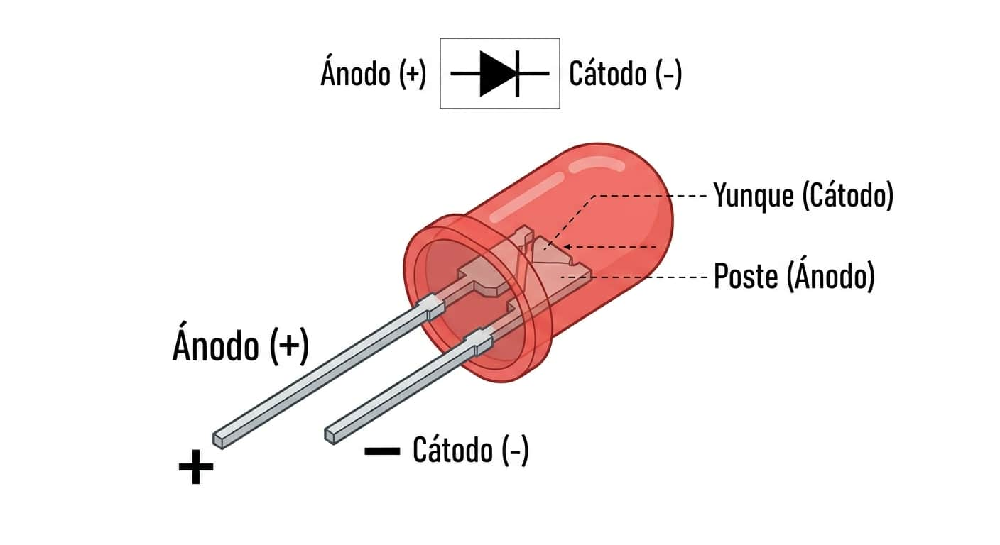
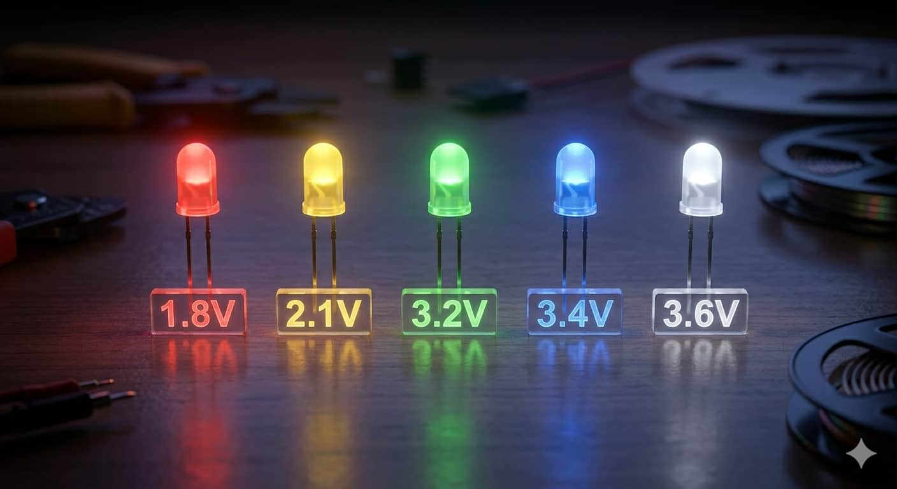
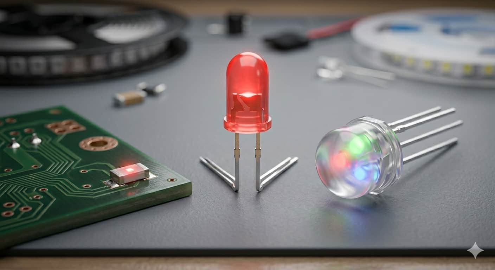
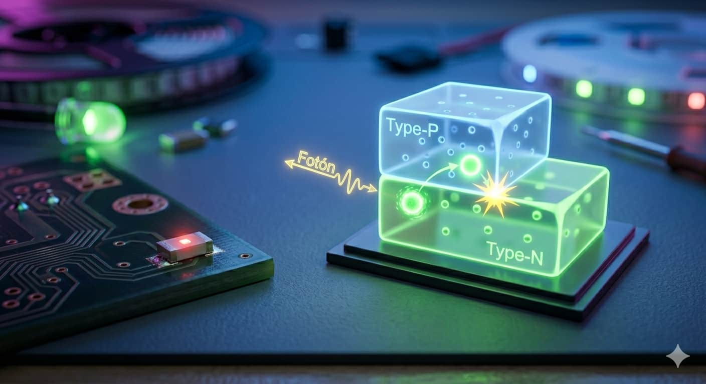
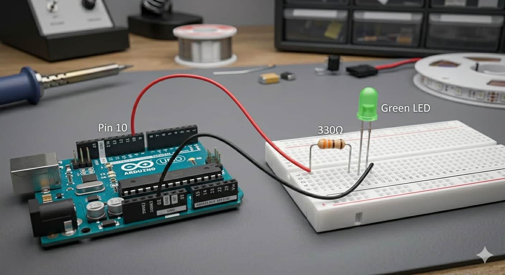

Polaridad

A diferencia de otros componentes, el LED tiene dirección. El Ánodo (positivo) es la pata larga y el Cátodo (negativo) es la corta.

El LED es el componente que convierte la energía eléctrica directamente en luz. En robótica, es nuestro "Hola Mundo": la primera señal visual de que nuestros circuitos y líneas de código están cobrando vida.

A diferencia de otros componentes, el LED tiene dirección. El Ánodo (positivo) es la pata larga y el Cátodo (negativo) es la corta.

Cada color requiere un voltaje distinto para encender: un LED rojo necesita unos 1.8V, mientras que el azul o blanco requieren cerca de 3.3V.

Existen versiones SMD para circuitos diminutos, RGB para crear cualquier color y LEDs de Alta Potencia para iluminación.

A través de un proceso llamado electroluminiscencia, los electrones saltan entre materiales semiconductores. Imagina un escalón: cuando un electrón "cae" por él, libera un destello de luz llamado fotón. Al no usar filamentos, no genera calor excesivo y es increíblemente duradero.
Para esta práctica, utilizaremos un LED conectado al Pin 10, asegurándonos de usar una resistencia de 330Ω para limitar la corriente y proteger el diodo.

La señal viaja desde el pin digital hacia el LED y regresa por el pin de tierra (GND):
Copia este código para hacer que el LED parpadee cada medio segundo:
void setup() { pinMode(10, OUTPUT); }
void loop() {
digitalWrite(10, HIGH); delay(500);
digitalWrite(10, LOW); delay(500);
}
Aprende más sobre el cálculo de resistencias para proteger tus LEDs: